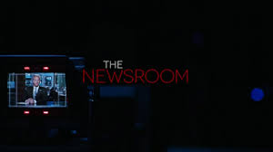
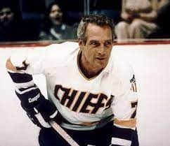

My Favorite Things
by Noah Schwartz
Entertainment
Websites
Recipe
My Favorite Entertainment
Television Shows
The Dick Van Dyke Show
Rick and Morty
Monty Python's Flying Circus
James May's Our Man in Japan
The Newsroom

Movies
Slap Shot
Butch Cassidy and the Sundance Kid
Network
Super Troopers 2
Citizen Kane
